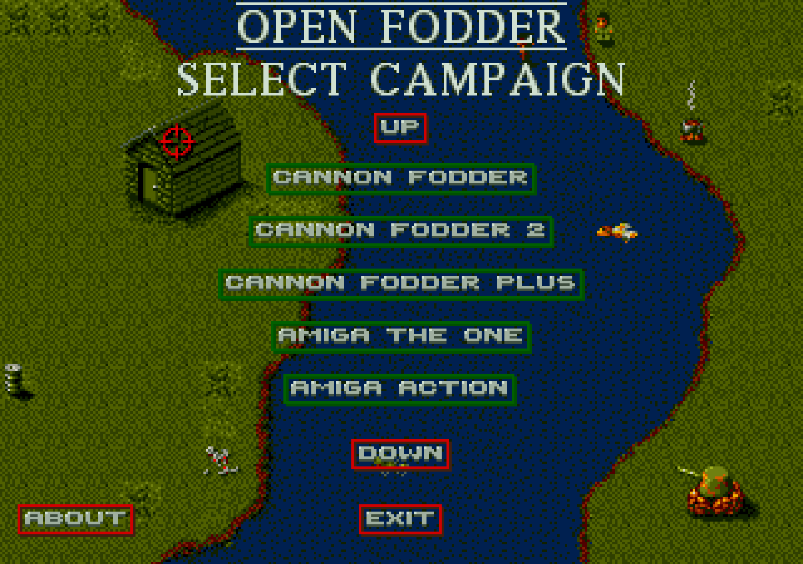

CANNON FODDER, RECOMMISSIONED.
Mission control for an open-source classic.
- Engines
- CF1 & CF2
- Platforms
- Windows, Linux, BSD, RetroPie, Web
- Latest build
- v2.0.0 — 16 December 2025
01 // SITUATION REPORT
What is Open Fodder?
Open Fodder is an open-source reimplementation of Sensible Software's 1993 squad shooter Cannon Fodder. The engine is faithful to the original, runs natively on modern Windows, Linux, OpenBSD and other *nix, and plays in a browser. It ships with seven playable magazine cover-disk demos. Retail data is optional but supported: drop in your purchased files and the full campaigns light up.
-
Faithful engine
Original timing, briefing pacing, soldier handling and weapon physics, reimplemented in modern C++.
-
Retail & demo support
Plays original DOS, Amiga, CD and Plus data, plus seven bundled magazine cover-disk demos so you can launch on day zero.
-
Random map generator
A JavaScript-driven generator builds endless one-off maps — hostages with their rescue tents, jeeps, tanks, and helicopters when extraction calls for it.
-
Modding
Open Fodder Editor builds new campaigns, missions and tilesets that the engine consumes natively.
-
Modern OS support
Native Windows installer, Linux Flatpak, OpenBSD and RetroPie via source, plus a continuously-updated bleeding-edge build.
-
Play in browser
A web build of the demos runs directly in your browser — share a URL and you are in the briefing room.
02 // THEATRE OF OPERATIONS
Tactical Roster
Nine campaigns operational across two engines.
| Campaign | Source | Engine | Platforms |
|---|---|---|---|
| Cannon Fodder | 1993Virgin Interactive · retail | CF1 | DOS AMIGA |
| Cannon Fodder 2 | 1994Virgin Interactive · retail | CF2 | DOS AMIGA CD |
| Cannon Fodder Plus | 1994Amiga Power · cover-disk demo | CF1 | AMIGA |
| Amiga Action | 1994Europress · cover-disk demo | CF1 | AMIGA |
| Amiga Format Christmas Special | 1993Future Publishing · cover-disk demo | CF1 | AMIGA |
| Amiga Format Not Very Festive | 1995Future Publishing · cover-disk demo | CF2 | AMIGA |
| Amiga Power Alien Levels | 1994Future Publishing · cover-disk demo | CF1 | AMIGA |
| Amiga The One | 1993EMAP · cover-disk demo | CF1 | AMIGA |
| PC Format | 1994Future Publishing · cover-disk demo | CF1 | DOS |
Cover-disk attributions are best-known historical record; corrections welcome via the issue tracker.
03 // DEPLOY
Mission Equipment
Choose your platform. The engine is free; bring your own retail data, or run the demos as supplied.
-
Windows installer
Official Windows installer. Recommended for first deploy. ~16 MB.
Download -
Windows nightly build
Latest x86 release zip from continuous build. No installer; unzip and run.
Get nightly -
Linux, BSD & generic *nix
Build from source on Linux, OpenBSD, RetroPie or other *nix; or install the Flatpak. Instructions in INSTALL.md.
Read INSTALL.md -
Browser demo
Web build of the demos. No install, no download. Works on desktop browsers.
Launch demo -
Open Fodder Editor 2.0
Campaign editor: build new missions, tilesets and scripts that the engine consumes natively.
Editor on GitHub -
Source code
Read it, fork it, build it. Open source under the GNU GPL. Pull requests welcome.
View source
04 // MISSION FOOTAGE
Operations Recovered
Selected mission tapes. Click through to YouTube; embeds load on demand.
-

Open Fodder 1.5
Engine demonstration; mixed CF1 / CF2 mission rotation.
-

Open Fodder 1.4
Pre-2.0 milestone build with scripting hooks.
-

1.3 — Amiga Format
Amiga Format Christmas Special running under the open engine.
-

Open Fodder 0.8
Early-build archive. The first time it really felt like Cannon Fodder.
05 // COMMS CHANNELS
Frequencies Open
Three channels are open. Pick one and identify yourself.
-
FREQ 01 discord.gg/4mX2wFM
Discord
Live chat with the maintainers and the regulars. Best place for build help.
JOIN DISCORD -
FREQ 02 /openfodder
Facebook
Release announcements and the occasional lore drop.
FOLLOW PAGE -
FREQ 03 @segrax
X (Twitter)
Maintainer's own channel; build progress and tactical thoughts.
OPEN ON X
06 // ORDER OF BATTLE
Credits
A small team and a long tail of contributors.
CREW MANIFEST · OPEN FODDER
- @segrax Lead engineer · project maintainer
- @drnovice Co-author · scripting and tooling
- All GitHub contributors issues, patches, and ports
- Project wiki build notes, file formats, and scripting
License: License · GNU GPL. See the repository for terms.
Disclaimer: Cannon Fodder is © 1993 Sensible Software / Virgin Interactive. Open Fodder is a fan-made open-source engine port and is not affiliated with the original publisher.